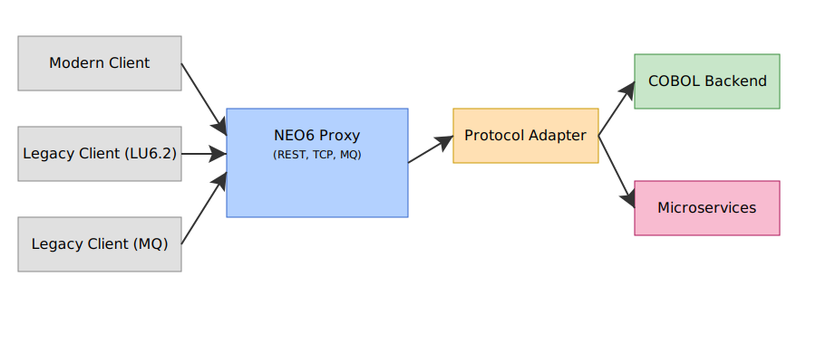

Arquitectura NEO6

Visión General
NEO6 es un ecosistema completo de componentes diseñado para la interoperabilidad entre aplicaciones modernas y sistemas legacy. La arquitectura está basada en microservicios con administración centralizada y protocolos modulares.
Componentes Principales
neo6-admin (Sistema de Administración)
- Función: Administración centralizada de todos los proxies
- Tecnología: Rust + Axum + Dashboard Web
- Puerto: 8090 (configurable)
- Características:
- Dashboard web interactivo
- API REST completa
- Gestión del ciclo de vida de proxies
- Monitoreo en tiempo real
- Configuración centralizada
neo6-proxy (Proxy de Protocolos)
- Función: Instancias individuales por protocolo
- Tecnología: Rust + carga dinámica de protocolos
- Puertos: Variables según protocolo y configuración
- Características:
- Carga dinámica de bibliotecas de protocolo
- Interface de control administrativo
- Métricas y monitoreo integrado
- Configuración flexible
- Logging estructurado
neo6-protocols (Bibliotecas de Protocolo)
- Función: Implementación modular de protocolos
- Tecnología: Rust + FFI (Foreign Function Interface)
- Protocolos soportados:
- TN3270 - Terminal emulation
- LU6.2 - IBM APPC protocol
- MQ - IBM Message Queue
- REST - HTTP/REST APIs
- TCP - TCP/IP proprietary
- JCA - CICS Transaction Gateway
Arquitectura de Despliegue
Runtime Environment
NEO6 Runtime
├── neo6-admin (Puerto 8090)
│ ├── Dashboard Web
│ ├── API REST
│ └── Proxy Manager
│
├── neo6-proxy instances
│ ├── rest-api (Puerto 8080, Admin 9080)
│ ├── tn3270-primary (Puerto 2323, Admin 3323)
│ └── mq-gateway (Puerto 5001, Admin 6001)
│
└── Shared Resources
├── Protocol Libraries (lib/)
├── Configurations (config/)
└── Logs (logs/)
Comunicación entre Componentes
- Admin → Proxies: TCP sockets en puertos admin
- Web UI → Admin: HTTP/REST API
- External → Proxies: Protocolos nativos en puertos de servicio
- Proxies → Protocols: Dynamic library loading (FFI)
Flujo de Datos
Inicio del Sistema
- neo6-admin lee configuración centralizada
- ProxyManager inicia instancias según admin.yaml
- Cada proxy carga bibliotecas de protocolo necesarias
- Se establecen interfaces de control administrativo
- Dashboard web queda disponible para monitoreo
Procesamiento de Requests
- Request externo llega al puerto de protocolo
- neo6-proxy procesa usando biblioteca de protocolo
- Se actualiza métricas y logging
- Response se envía de vuelta al cliente
- Métricas disponibles via admin interface
Gestión de Configuración
Configuración Jerárquica
Configuración NEO6
├── proxy_defaults (Configuración base)
│ ├── binary_path
│ ├── library_path
│ ├── config_path
│ └── log_level
│
└── proxy_instances (Configuración específica)
├── Override de defaults
├── Configuración de protocolo
└── Configuración de red
Recarga Dinámica
- Cambios de configuración sin reinicio
- Recarga de bibliotecas de protocolo
- Actualización de niveles de log
- Validación automática de configuración
Sistema de Métricas
Arquitectura de Monitoreo
Métricas NEO6
├── MetricsCollector (Por proxy)
│ ├── Connection metrics
│ ├── Protocol metrics
│ └── Performance metrics
│
├── Admin Aggregation
│ ├── Global metrics
│ ├── Cross-proxy analytics
│ └── Health status
│
└── Dashboard Visualization
├── Real-time charts
├── Connection tracking
└── Alert management
Tipos de Métricas
- Conexión: Estado, throughput, latencia
- Protocolo: Requests, errores, tiempo de respuesta
- Sistema: CPU, memoria, uptime
- Aplicación: Transacciones CICS, estados de sesión
Seguridad y Confiabilidad
Aislamiento de Componentes
- Cada proxy ejecuta en proceso separado
- Fallos aislados no afectan el sistema completo
- Reinicio individual de componentes
- Configuración y logs por instancia
Gestión de Errores
- Logging estructurado con niveles
- Recovery automático de conexiones
- Timeouts y circuit breakers
- Métricas de health checking
Extensibilidad
Nuevos Protocolos
Agregar soporte para nuevos protocolos:
- Implementar biblioteca de protocolo en Rust
- Compilar como biblioteca dinámica
- Agregar configuración en admin.yaml
- Deploy automático via neo6deploy.sh
Integración con Sistemas Externos
- API REST para integración
- Webhooks para notificaciones
- Exportación de métricas (Prometheus)
- SIEM integration via structured logs
Patrones de Arquitectura
Microservicios
- Servicios independientes y deployables
- Comunicación via APIs well-defined
- Escalabilidad horizontal
- Tecnologías heterogéneas donde sea beneficioso
Event-Driven
- Eventos de conexión y desconexión
- Notificaciones de cambios de estado
- Métricas como eventos en tiempo real
- Configuración reactive
Circuit Breaker
- Prevención de cascading failures
- Timeout y retry policies
- Health checking automático
- Degraded service handling
Performance y Escalabilidad
Características de Performance
- Async/await en Rust para concurrencia
- Zero-copy donde sea posible
- Connection pooling
- Efficient protocol parsing
Escalabilidad
- Múltiples instancias de proxy por protocolo
- Load balancing entre instancias
- Horizontal scaling del admin
- Resource monitoring y auto-scaling